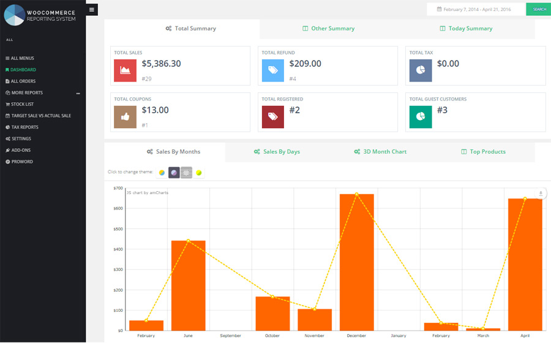

Thank you so much for purchasing “Advanced WooCommerce Reporting” Plugin
This documentation is for “Advanced WooCommerce Reporting” Plugin.
We will show you what does it do and how you could use it. This document covers the installation and use of this plugin and reveals answers to common problems and issues - I encourage you to read this document if you are experiencing any difficulties.
Installation
There are two methods to install the theme.
a : Installing from Wordpress
b : Installing Via FTP Server
If the normal installation method (a) is not supported by your web host, you will have to use the alternate option (b).
Installing from WordPress
Follow the steps below to install inside WordPress:
- Login to WordPress Admin and browse to Plugins > Add New and click Upload Plugin and in new page click .
- Click on Chosen File Browse your computer to select "PW-Advanced-Woocommerce-Reporting-System.zip" (it's in the zip file you downloaded from Codecanyon). Click "Install Now" button.
- Wait while the plugin is uploaded and installed.
- Once it's uploaded, click the Activate Plugin link.
Installing via FTP Server
Follow the steps below to install via FTP:
- Log into your hosting space via an FTP software.
- Unzip the "PW-Advanced-Woocommerce-Reporting-System.zip" file and ONLY use the extracted plugin folder.
- Upload the extracted plugin folder into wp-content/plugins folder.
- Activate the newly installed plugin. Go to Plugins > Installed Plugins and find "PW Advanced Woo Reporting" plugin and active it.
The Plugin Description
After Install and Activate this plugin a menu will be added in your admin menu named “Woo Reporting”. After click, the plugin main page will be displayed.
Dashboard
The dashboard is located at the top of the sub-menu, as it is been expected, named “Dashboard”. You can change the date and search in custom range date.

- Total Summary : Total amount of sales, refund, tax, coupons, registered and guest customer
- Other Summary : There are another amounts of shop parameters. Such as : Current year projected sale, Order tax, Avarage sales, Shipping tax and etc.
- Today Summary : You can compare today situation with yesterday and discover the percent of increase and decrease between them.
- Chart Preview
- Sales by Month : Display amount of sales per month in date that has been searched by you.
- Sales by Week : Display amount of sales per week in date that has been searched by you.
- Top Products : Display some of top products in date that has been searched by you.
- Monthly Summary : Summary of target sale for current year based on monthes.
- Order Summary : Display a summary of orders based on : Today, Yesterday, Week, Month and year.
- Sales Order Status : Display order status and amount of them for order status such as : Completed, Processing, Refunded and etc.
- Top Products : Display the top 5 products with product quantity and amount of each product.
- Top Category : Display the top 5 category with category quantity and amount of each category.
- Top Billing Country : Display the top 5 billing country with order count and amount of each country.
- Top Billing State : Display the top 5 billing state with order count and amount of each country.
- Recent Orders : Display the recent 5 orders. You can see all orders in "All Orders" in main menu.
- Top Customers : Display some customers with name, email and order count.
- Recent Coupon : Display some of coupons with coupon code, Coupon used count and amount.
- Recent Payment Gateway : Display some of payment gateway with order count and amount of them.
Note :
You can set the number of items for these sections (Top Products, Top Category, Top Billing Country, Top Billing State, Recent Orders, Top Customers, Recent Coupon and Recent Payment Gateway) in "Settings".
Information :
There are many Advanced Reports in "Woocommerce Reporting" plugin for the popular reports in one shop.
There are similar options for each report :
- Seach From : There is a search form for each report with related search fields to generate customize reports.
- Data Grid : The search result will be displayed in grid layout. This grid has some options : Set Number of Rows , Export Date, Show/Hide Columns and Pagination.
There are many advanced reports : All Orders, Product, Category, Variation, Stock List, Tax Reports and Etc.
Settings
- Dashboard Setting :
- Dashboard Status : Sometime you want to disable dashboard page and load another report as main report. You can set disable for this field and then choose your report for "ALTERNATIVE REPORT" field.
- Dashboard Date : You can set customize date for dashboard.
- Disable Map in Dashboard ? You can disable/enable map of dashboard.
- Disable Charts in Dashboard ? You can disable/enable charts of dashboard.
- Other : You can set number of items for Top Products, Top Category, Top Billing Country, Top Billing State, Recent Orders, Top Customers, Recent Coupon and Recent Payment Gateway part in dashboard. Note : Leave blank to set 5 items.
- Projected Sale : In this section you can set target amount of sale for each month of a year (which you want to reach to), then in "Projected Vs Actual Sales" menu you can compare the actual sales amount of each month with these target amounts.
- Translate : You can set custom translate for months.
Copyright & Credits
Bootstrap v3.2.0 - https://github.com/twbs/bootstrap/blob/master/LICENSE
Chosen - https://github.com/harvesthq/chosen/blob/master/LICENSE.md
DataTables 1.10.10 - SpryMedia Ltd - datatables.net/license
amChart - https://www.amcharts.com/terms-conditions/